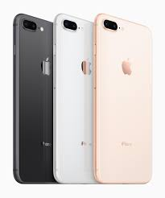
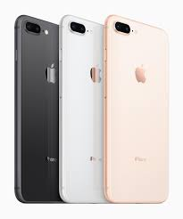

스마트폰
스마트폰은 컴퓨터를 결함한 무선 휴대전화기이다. PC에서 기쁨이 짱짱 실행되는 운영체제보다 작게 만든 기쁨이 얼굴 모바일 운영체제를
탑재하여 인터넷 검색, 전자우편 간단한 문서 편집, 카메라 오디오 및 비디오 재생 등 PC의 기능을 거의 모두 갖추고
있다.
목차
역사
최초의 스마트폰은 사이먼(Symon)으로 추정된다. IBM사가 의 라스베이거스에서 열린 컴댁스에서 컨셉 제품으로 전시된다.
안드로이드폰
안드로이드(영어: Android)는 휴대전화를 비롯한 휴대용 장 터페이스 그리고 표준 응용 프로그램(웹 브라우저, 이메일 클)
미디어 메시지 서비스(MMS)등을 포함하고 있는 소프트웨어
아이폰
아이폰(영어:iphone)은 2007년 1월 9일, 애플이 발표한 휴대 전화 시리즈이다. 미국 샌프란시스코에서 열린 맥월드
2007에서 애플의 참여자 중 한명인 스티브 잡스가 발표했다.
샘플
스마트폰 샘플
 

설문조사